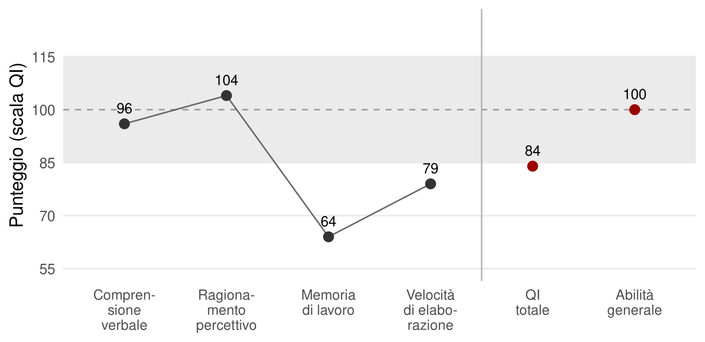
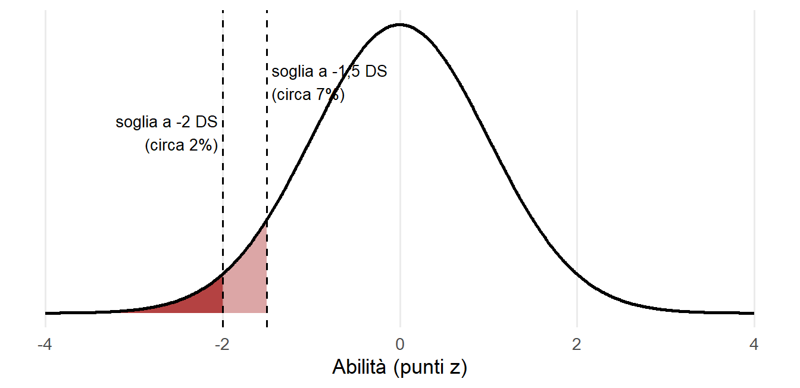
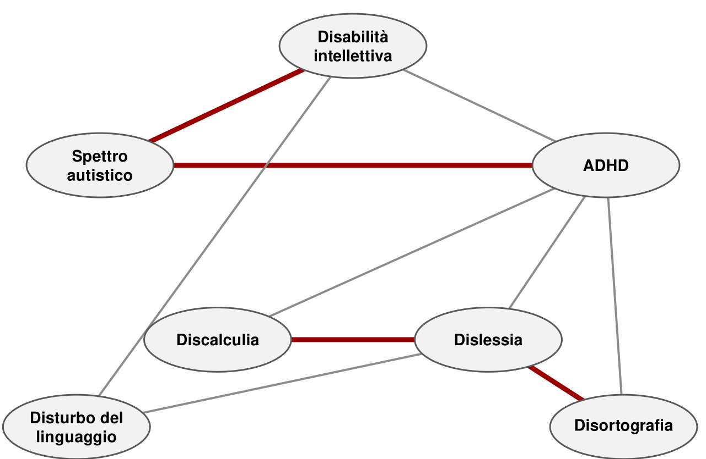

18 Dalle categorie alle dimensioni
Una diagnosi sembra una risposta: c’è o non c’è. Nel neurosviluppo, però, la risposta è quasi sempre una questione di grado. Essere molto distanti dalla media in qualche aspetto del funzionamento cognitivo, emotivo, comportamentale o sociale può creare difficoltà di adattamento al contesto in cui si vive. Ma quella distanza raramente si lascia chiudere negli inquadramenti netti che la medicina usa per le malattie.
Questo capitolo e il prossimo riguardano le condizioni del neurosviluppo: disabilità intellettiva, autismo, ADHD, disturbi specifici dell’apprendimento. Il loro legame con l’intelligenza è stretto, per due ragioni. La prima è pratica: la valutazione dell’intelligenza fa parte di quasi ogni percorso diagnostico. La seconda è teorica, ed è il tema di questo capitolo: le condizioni del neurosviluppo hanno la stessa struttura delle abilità cognitive, fatta di dimensioni continue e correlate. Capirlo cambia il modo di pensare la diagnosi.
Le definizioni diagnostiche riportate qui servono a orientarsi e vanno sempre verificate nelle versioni aggiornate dei manuali. Non sono una guida clinica.
18.1 Un caso illustrativo
Una bambina di nove anni viene valutata per difficoltà scolastiche marcate. La lettura è lenta e poco accurata, l’ortografia fragile, la matematica fonte di ansia. Genitori e insegnanti riferiscono distrazione frequente. Per il resto ragiona, ricorda e si relaziona come i coetanei. Il caso è costruito a scopo illustrativo, ma è molto tipico.
La valutazione cognitiva restituisce un QI totale di 84. Il dato, letto da solo, indicherebbe un funzionamento generale sotto la media. Ma gli indici raccontano altro: comprensione verbale e ragionamento sono nella media, memoria di lavoro e velocità di elaborazione molto sotto. L’indice di abilità generale, che esclude memoria di lavoro e velocità, è 100. Le prove di lettura e scrittura sono molto deboli, quelle di matematica deboli soprattutto nel calcolo scritto. Il questionario sull’ansia per la matematica dà valori elevati. I questionari sull’attenzione compilati da genitori e insegnanti indicano difficoltà rilevanti, non confermate in modo netto dalle prove attentive.
La conclusione sarà probabilmente una diagnosi di disturbo misto delle abilità scolastiche, con una segnalazione di difficoltà attentive. Ma il caso solleva domande che nessuna etichetta risolve. Dislessia e discalculia sono davvero condizioni distinte, se si presentano quasi sempre insieme? Le difficoltà in matematica sono cognitive o emotive? L’ADHD c’è o non c’è, se i sintomi riferiti sono chiari e le prove meno? Il quadro è misto, spurio, ed è del tutto reale.
18.2 Le categorie dei manuali
La pratica clinica inquadra queste difficoltà in categorie prefissate, quasi si trattasse di sindromi mediche. I manuali di riferimento, il DSM-5-TR e l’ICD-11, definiscono i disturbi del neurosviluppo come condizioni che esordiscono nel periodo dello sviluppo e comportano difficoltà significative nell’acquisizione o nell’esecuzione di funzioni intellettive, motorie, linguistiche o sociali (Association, 2022; World Health Organization, 2019). La classificazione si basa sul quadro osservabile, non sulle cause.
Le categorie principali sono queste:
- disabilità intellettiva: limitazioni nel funzionamento intellettivo generale e nel comportamento adattivo nella vita quotidiana;
- disturbo dello spettro dell’autismo: difficoltà persistenti nella comunicazione e interazione sociale, insieme a comportamenti, interessi e attività ristretti e ripetitivi;
- ADHD: disattenzione e/o iperattività-impulsività persistenti, presenti in più contesti e tali da compromettere il funzionamento;
- disturbi specifici dell’apprendimento: difficoltà persistenti in lettura, scrittura o calcolo, non spiegate da disabilità intellettiva, deficit sensoriali o scolarizzazione insufficiente. In Italia la legge 170 del 2010 li riconosce come dislessia, disgrafia, disortografia e discalculia;
- disturbi della comunicazione e del movimento.
Nella disabilità intellettiva si distingue da sempre fra forme sindromiche, con cause genetiche identificate e segni fisici riconoscibili, come la sindrome di Down o dell’X fragile, e forme non sindromiche, senza una causa unica individuabile. Le seconde rappresentano in buona parte la coda inferiore della distribuzione normale delle abilità, prodotta dagli stessi innumerevoli fattori che generano le differenze nella popolazione generale. Questa distinzione è la chiave per capire tutte le altre condizioni.
18.3 L’illusione del deficit centrale
Per decenni la ricerca ha cercato per ogni disturbo un deficit centrale: un modulo cognitivo difettoso in uno sviluppo altrimenti normale. Un disturbo, un deficit. L’intelligenza contava solo come inquadramento generale o come criterio di esclusione. Oggi questo approccio è sostanzialmente abbandonato (Astle & Fletcher-Watson, 2020). I candidati non sono mancati.
Per l’autismo si sono proposti un deficit nella capacità di rappresentarsi gli stati mentali altrui, la cosiddetta teoria della mente; un malfunzionamento del sistema dei neuroni specchio; una tendenza a elaborare i dettagli perdendo la visione d’insieme; un orientamento estremo verso la sistematizzazione a scapito dell’empatia. Le differenze medie osservate sono reali, e nei compiti classici di teoria della mente possono essere ampie; ma variano molto da persona a persona e non bastano a definire la condizione. Le prime evidenze sui neuroni specchio non sono state confermate (Hamilton, 2013). Una meta-analisi non ha trovato né una superiorità nell’elaborazione locale né un deficit in quella globale (Van der Hallen et al., 2015). Anche l’idea di un deficit sociale tutto interno alla persona autistica è stata messa in discussione. Secondo l’ipotesi della doppia empatia, le difficoltà nascono soprattutto nell’incontro fra modi diversi di comunicare (Milton, 2012). Un esperimento ha trovato che catene di persone autistiche si trasmettevano un’informazione con la stessa efficacia di catene di persone non autistiche, mentre le catene miste funzionavano peggio (Crompton et al., 2020). È un risultato interessante, non ancora una teoria consolidata.
Per l’ADHD si sono proposti deficit di inibizione, di funzioni esecutive, di tolleranza dell’attesa. Le differenze medie esistono, di solito attorno a mezza deviazione standard, ma nessuna distingue in modo affidabile chi ha la diagnosi da chi non ce l’ha. E differenze di entità simile si trovano anche in compiti non specifici: memoria a breve termine, velocità, perfino ragionamento astratto (Sjöwall et al., 2013).
Per la dislessia il candidato più forte è il deficit fonologico, insieme alla lentezza nella denominazione rapida. Qui le differenze medie sono grandi, oltre una deviazione standard. Ma molti casi di dislessia non presentano quei deficit, e nessun marcatore singolo è necessario o sufficiente (Pennington, 2006). Per la discalculia il presunto deficit del senso del numero mostra differenze medie modeste, mentre molti processi generali, come memoria di lavoro, velocità e ragionamento, risultano ugualmente o più compromessi.
Il bilancio è netto. Nessun marcatore genetico, di neuroimmagine, neurofisiologico, cognitivo o neuropsicologico ha oggi una capacità diagnostica adeguata per nessuna delle condizioni del neurosviluppo (Astle et al., 2022).
18.4 Soglie arbitrarie
C’è una ragione profonda per cui i deficit centrali non si trovano. È la stessa per cui le abilità cognitive hanno una distribuzione continua. Ogni comportamento umano è il risultato di moltissimi fattori genetici, neurobiologici, ambientali ed esperienziali. Che si sommino o, in parte, si moltiplichino, il risultato di molti fattori è comunque una distribuzione continua. E in una distribuzione continua non esiste una soglia naturale.
La lettura ne è l’esempio classico. Già all’inizio degli anni Novanta uno studio longitudinale mostrò che l’abilità di lettura nella popolazione si distribuisce lungo un unico continuo, senza un punto in cui finisca la distribuzione dei lettori tipici e cominci quella dei dislessici (Shaywitz et al., 1992). La dislessia, in questo senso, non è una categoria naturale: è il nome che diamo alla parte bassa della distribuzione di un’abilità che la scuola richiede. Anche per l’ADHD, uno studio su gemelli ha trovato che l’ereditabilità dei sintomi è la stessa lungo tutto il continuo, dai livelli più alti fino alla piena normalità: non esiste un nucleo genetico distinto del disturbo (Levy et al., 1997).
Ne segue che la prevalenza di questi disturbi dipende dalla soglia scelta (Figura 18.2). Le soglie riflettono convenzioni di rarità, come il 5° percentile o due deviazioni standard sotto la media, e considerazioni pragmatiche sul bisogno di supporto. Sono decisioni ragionevoli, non scoperte.

Questo porta a un rovesciamento della causalità che conviene rendere esplicito. Non si legge con fatica a causa della dislessia: si riceve la diagnosi di dislessia perché si legge con fatica, per ragioni non altrimenti spiegate. Non si è iperattivi a causa dell’ADHD: si riceve l’etichetta di ADHD perché si è molto iperattivi. L’etichetta descrive un comportamento osservato, non ne individua la causa. E poiché il comportamento è a valle di innumerevoli concause, non si troveranno mai poche variabili fortemente associate, ma molte variabili associate debolmente.
18.5 Comorbilità ovunque
Il secondo problema per l’approccio categoriale è la comorbilità. Le condizioni del neurosviluppo si presentano insieme molto più spesso di quanto ci si aspetterebbe se fossero indipendenti. Una parte consistente delle persone autistiche ha anche una disabilità intellettiva o un ADHD; la dislessia si associa spesso alla disortografia e a difficoltà in matematica; ADHD e disturbi dell’apprendimento co-occorrono con frequenza elevata. Nelle casistiche cliniche dei disturbi dell’apprendimento, i quadri misti sono la norma più che l’eccezione (Toffalini et al., 2017).

Sotto le etichette troviamo quindi tratti continui, con soglie arbitrarie, e correlati, con comorbilità estese. È esattamente la struttura delle abilità cognitive: distribuzioni gaussiane e positive manifold. E, come per le abilità, la spiegazione più semplice della correlazione è l’esistenza di cause comuni.
18.6 Verso modelli dimensionali
Nella psicopatologia dell’adulto questa consapevolezza ha portato a proposte alternative ai manuali categoriali. La più sviluppata è la tassonomia gerarchica della psicopatologia (HiTOP), che organizza sintomi e tratti in dimensioni a diversi livelli di generalità, fino a un possibile fattore generale p (Caspi et al., 2014; Kotov et al., 2017). Un modello del genere accoglie come naturali la comorbilità, la variabilità all’interno di uno stesso disturbo e i casi sottosoglia. Invece di chiedersi quale disturbo abbia una persona, si chiede quale sia il suo profilo su più dimensioni.
È stato proposto di includere le condizioni del neurosviluppo in questi modelli come un’ulteriore dimensione, in continuità con la psicopatologia adulta e in relazione con la struttura dell’intelligenza (Astle et al., 2022). I legami esistono. Nello studio che ha proposto il fattore p, punteggi più alti in p si associavano a un funzionamento cognitivo un po’ più basso già nell’infanzia e a un declino maggiore in età adulta (Caspi et al., 2014). La direzione causale resta da chiarire: un livello cognitivo più alto potrebbe proteggere, la psicopatologia potrebbe danneggiare, ed entrambe le cose possono essere vere.
Il problema non riguarda solo la clinica. Anche la ricerca pensa ancora per categorie, e le categorie creano un dilemma: i campioni diagnostici «puri» non sono rappresentativi, e i campioni rappresentativi non sono puri. Profili cognitivi simili si trovano in condizioni diverse, e profili diversi nella stessa condizione. Studiare i profili e le dimensioni è più informativo che studiare le etichette.
18.7 Neurodivergenza e adattamento
Resta una domanda. Se tratti come quelli autistici o legati all’ADHD sono così diffusi ed ereditabili, perché l’evoluzione non li ha eliminati? Una risposta possibile è che non siano solo disfunzionali. La selezione naturale non produce fenotipi perfetti, ma compromessi. Alta attività, ricerca di novità, decisioni rapide ed esplorazione sono poco adatte alle aule scolastiche moderne, ma potrebbero essere state vantaggiose in altri ambienti. Un’attenzione sistematica alle regolarità e ai dettagli può essere una risorsa in molti contesti. Sono ipotesi, non conclusioni; ma ricordano che la stessa caratteristica può essere un problema in un ambiente e una risorsa in un altro.
Per questo il termine neurodivergenza si è diffuso per indicare una differenza rilevante rispetto al funzionamento tipico, senza presupporre che sia un deficit. Il termine disturbo resta appropriato quando la differenza si traduce in disagio o compromissione significativa del funzionamento. Le due parole non si escludono: descrivono livelli diversi dello stesso fenomeno.